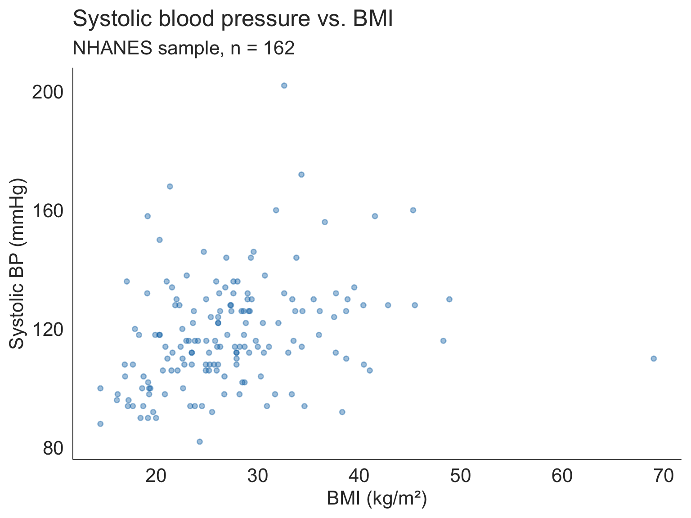
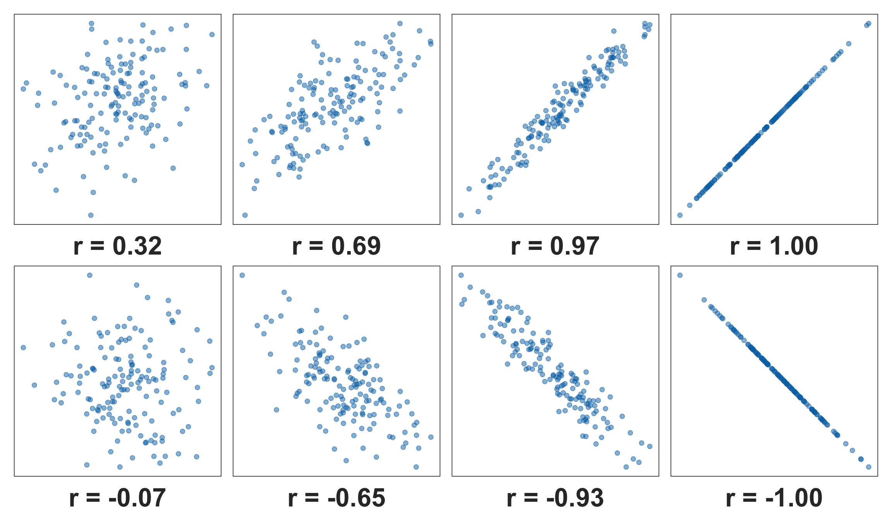
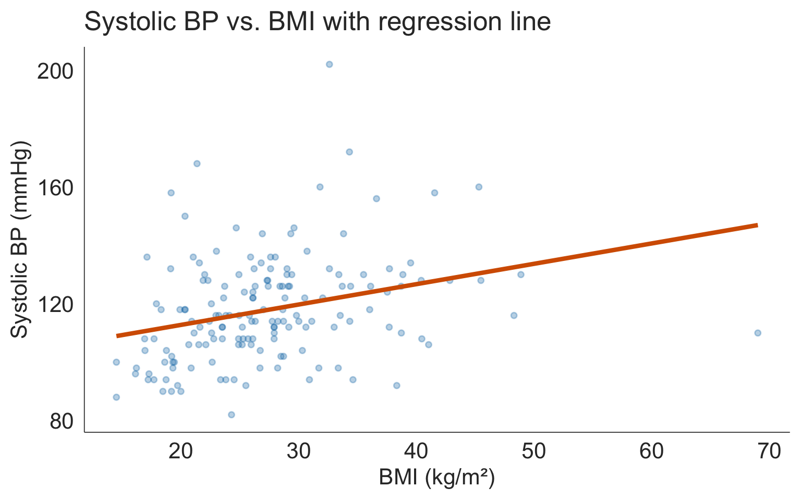
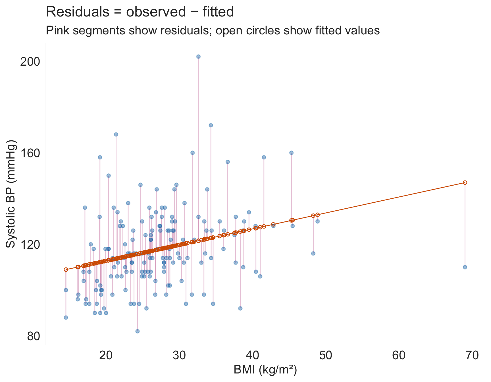
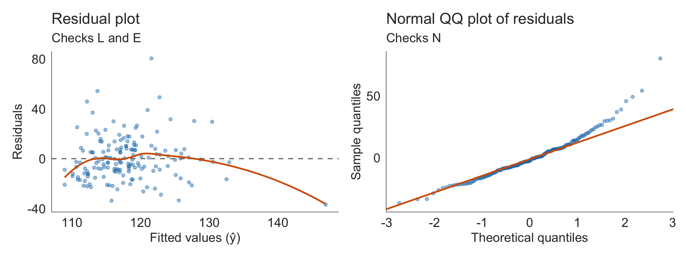
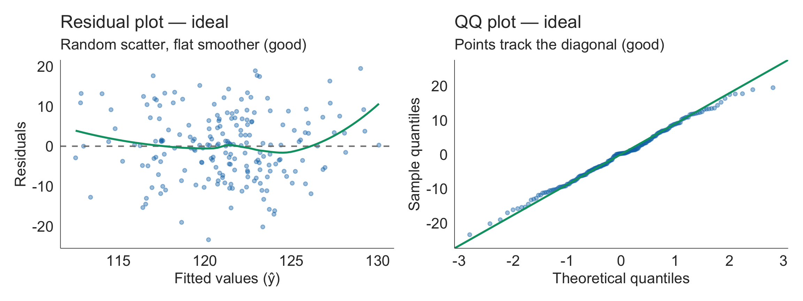
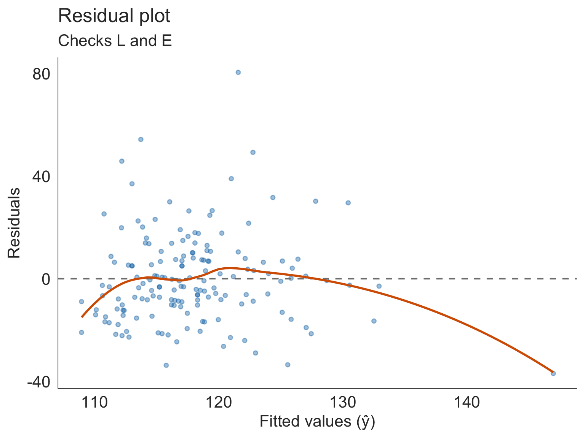
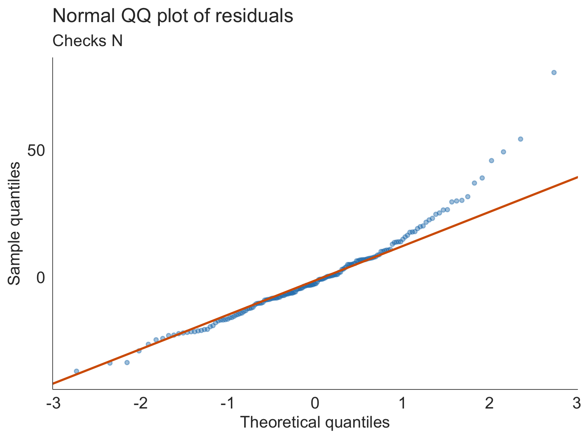
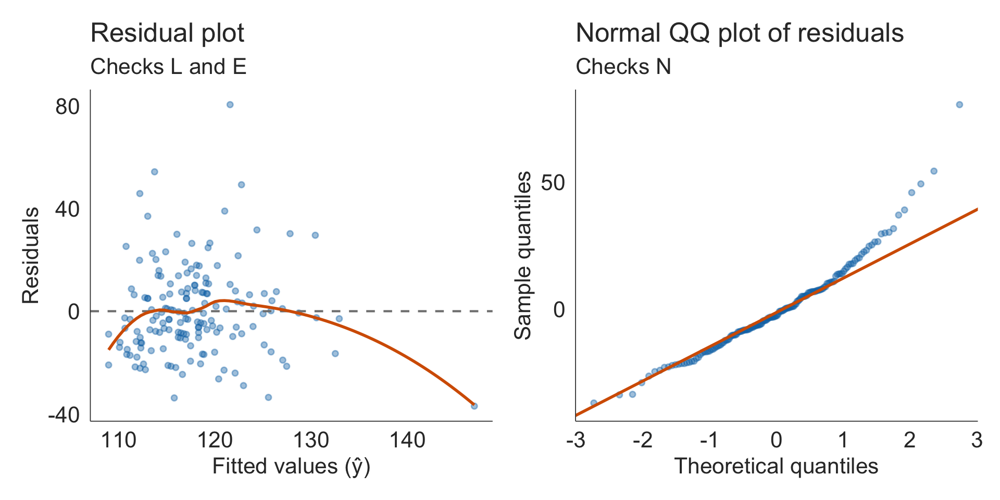
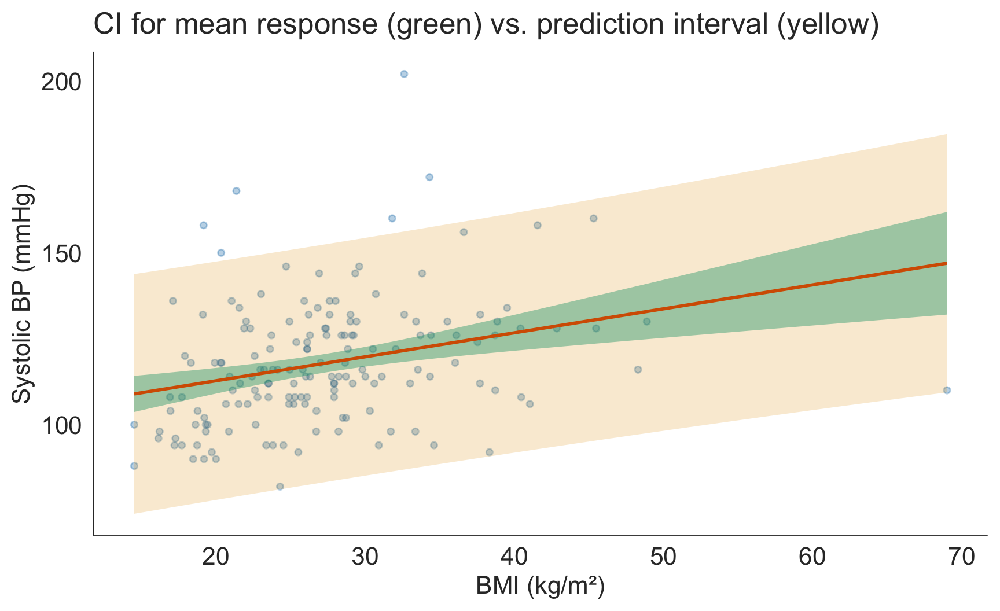

Textbook Sections 1.6, 6.1-6.4
March 11, 2026
By the end of today’s lecture, you will be able to:
Part 1: Correlation
Part 2: The SLR Model
lm() in RPart 3: Model Evaluation
Part 4: Inference and Prediction
We’ve spent the semester asking questions like:
Now a new type of question: As BMI increases, does systolic blood pressure tend to increase too?
Both variables are continuous. We need new tools.
Response variable
The variable that measures the outcome of interest — what we are trying to understand or predict.
Example: Systolic blood pressure
Explanatory variable
The variable we think may explain or be associated with changes in the response.
Example: BMI
When both variables are numerical, the scatterplot is our primary tool for visualizing the relationship.
When you look at a scatterplot, ask four questions:
1. Direction
2. Form
3. Strength
4. Unusual observations

The Pearson correlation coefficient \(r\) quantifies the strength and direction of the linear association between two continuous variables.
\[r = \frac{1}{n-1}\sum_{i=1}^{n}\left(\frac{x_i - \bar{x}}{s_x}\right)\left(\frac{y_i - \bar{y}}{s_y}\right)\]
Two variables \(X\) and \(Y\) are
Positively associated if \(Y\) increases as \(X\) increases
Negatively associated if \(Y\) decreases as \(X\) increases
- If there is no association between the variables, then we say they are uncorrelated or independent
The term “association” is a very general term

Multiple published schemes exist for labeling the strength of \(r\) — and they don’t agree:
Common scheme
| \(|r|\) | Label |
|---|---|
| \(\geq 0.6\) | Strong |
| \(0.3 – 0.6\) | Moderate |
| \(< 0.3\) | Weak |
Another common scheme
| \(|r|\) | Label |
|---|---|
| \(> 0.8\) | Strong |
| \(0.5 – 0.8\) | Moderate |
| \(< 0.5\) | Weak |
Mukaka (2012)
| \(|r|\) | Label |
|---|---|
| \(0.9 – 1.0\) | Very high |
| \(0.7 – 0.9\) | High |
| \(0.5 – 0.7\) | Moderate |
| \(0.3 – 0.5\) | Low |
| \(0.0 – 0.3\) | Negligible |
The disagreement is the lesson
Three published schemes, three different answers for the same \(r\). Rather than memorizing cutoffs, ask: does this correlation accurately and meaningfully represent the relationship for your research question and field?
In biomedical research with a single predictor, \(r = 0.40\) may be quite meaningful. In a tightly controlled physical measurement, \(r = 0.85\) might be disappointing. Always report the actual value and interpret it in context.
Eight things you need to know about interpreting correlations (from University of Sussex)
A high \(r\) tells you two variables are associated. It says nothing about whether one causes the other.
Classic confounders:
For our example:
BMI and systolic BP are associated — but the causal pathway is complex:
Important
Correlation is a description of the data. Causation requires study design (randomized experiments) or careful causal reasoning — not a higher \(r\).
Recall from Lesson 17: when data are skewed, contain outliers, or are ordinal, rank-based methods are more robust.
The Spearman correlation \(r_s\) is simply the Pearson correlation applied to the ranks of \(X\) and \(Y\):
When to use Spearman:
In base R
Tip
Pearson and Spearman are similar here — the relationship is reasonably linear without extreme outliers dominating.
Correlation answers: how strongly are these two variables associated?
But researchers often want to know more:
Correlation → Regression
Correlation gives us a single number summarizing the association. Regression gives us a line — a model that lets us quantify, predict, and test.
We keep the same scatterplot. We add a line.
A regression line describes how the mean of \(Y\) changes as \(X\) changes:
\[\hat{Y} = \hat{\beta}_0 + \hat{\beta}_1 X\]
The hat (^) on \(\hat{Y}\) signals this is an estimated value from the line — not the actual observed \(Y\).

Population model (unobservable)
\[Y = \beta_0 + \beta_1 X + \epsilon\]
Estimated line (from our data)
\[\hat{Y} = \hat{\beta}_0 + \hat{\beta}_1 X\]
| Symbol | Name | Type |
|---|---|---|
| \(Y\) | Response / outcome | Observed |
| \(X\) | Predictor / covariate | Observed |
| \(\beta_0\) | Intercept | Population parameter |
| \(\beta_1\) | Slope | Population parameter |
| \(\epsilon\) | Error term | Unobservable |
| \(\hat{\beta}_0\), \(\hat{\beta}_1\) | Estimated intercept / slope | Calculated from data |
For each observation \(i\), the residual is the difference between what we observed and what the line predicted:
\[\hat{\epsilon}_i = Y_i - \hat{Y}_i\]

Key question: With infinitely many possible lines we could draw through the data, which one is best?
OLS answer: Choose the line that minimizes the Sum of Squared Errors (SSE):
\[SSE = \sum_{i=1}^{n} \hat{\epsilon}_i^2 = \sum_{i=1}^{n}(Y_i - \hat{Y}_i)^2\]
Why square the residuals?
The OLS estimates \(\hat{\beta}_0\) and \(\hat{\beta}_1\) are the values that make SSE as small as possible. R’s lm() finds these automatically.
The OLS formulas
\[\hat{\beta}_1 = r \cdot \frac{s_Y}{s_X}\]
\[\hat{\beta}_0 = \bar{Y} - \hat{\beta}_1 \bar{X}\]
Notice: \(\hat{\beta}_1\) depends directly on the Pearson correlation \(r\) — regression and correlation are deeply connected.
lm() + tidy()
# Fit the model
model_bp <- lm(BPSys1 ~ BMI, data = nhanes_bp)
library(broom)
# Tidy output: coefficients, SE, t, p, CI
tidy(model_bp, conf.int = TRUE)# A tibble: 2 × 7
term estimate std.error statistic p.value conf.low conf.high
<chr> <dbl> <dbl> <dbl> <dbl> <dbl> <dbl>
1 (Intercept) 98.8 5.05 19.6 2.88e-44 88.8 109.
2 BMI 0.698 0.178 3.91 1.35e- 4 0.345 1.05
Our estimated regression equation:
\[\widehat{\text{Systolic BP}} = 98.83 + 0.70 \times \text{BMI}\]
\[\widehat{\text{Systolic BP}} = 98.83 + 0.70 \times \text{BMI}\]
Slope (\(\hat{\beta}_1\) = 0.70)
For every 1 kg/m² increase in BMI, systolic blood pressure is expected to increase by 0.70 mmHg, on average, holding all else constant.
Intercept (\(\hat{\beta}_0\) = 98.83)
The expected systolic BP for someone with a BMI of 0 is 98.83 mmHg.
⚠️ The intercept is often not directly interpretable. A BMI of 0 is physiologically impossible. The intercept is a mathematical anchor for the line — interpret it only when \(X = 0\) is meaningful in context.
Important
Regression describes association, not causation. “Expected to increase by 0.70 mmHg” does not mean BMI causes higher blood pressure — it means these two variables are associated in a positive linear way.
For the regression model to give valid estimates and reliable inference, four conditions must hold. We remember them as LINE:
| Letter | Condition | How to check |
|---|---|---|
| L | Linearity — the relationship between \(X\) and \(Y\) is linear | Scatterplot; residual plot |
| I | Independence — observations are independent of each other | Study design |
| N | Normality — residuals are approximately normally distributed | QQ plot of residuals |
| E | Equal variance — residuals have constant variance across all \(X\) values | Residual plot |
Tip
The two key diagnostic plots are the residual plot (residuals vs. fitted values) and the QQ plot of residuals. We generate both from the fitted model object using augment() from broom.
aug <- augment(model_bp)
p1 <- ggplot(aug, aes(x = .fitted, y = .resid)) +
geom_point(alpha = 0.4, color = "#0072B2", size = 1.5) +
geom_hline(yintercept = 0, linetype = "dashed", color = "grey50") +
geom_smooth(se = FALSE, color = "#D55E00", linewidth = 1) +
labs(title = "Residual plot",
subtitle = "Checks L and E",
x = "Fitted values (ŷ)",
y = "Residuals")
p2 <- ggplot(aug, aes(sample = .resid)) +
stat_qq(alpha = 0.4, color = "#0072B2", size = 1.5) +
stat_qq_line(color = "#D55E00", linewidth = 1) +
labs(title = "Normal QQ plot of residuals",
subtitle = "Checks N",
x = "Theoretical quantiles",
y = "Sample quantiles")
p1 + p2
Residual plot (checks L and E)
What you want to see:
Red flags:
QQ plot (checks N)
What you want to see:
Red flags:
Note: With large samples, moderate departures from normality matter less (CLT). Linearity and equal variance are more critical for inference.

Tip
Residual plot: The smoother is flat and close to zero — no curve, no funnel. QQ plot: Points track the diagonal closely; minor deviation at the very ends is normal and acceptable.

Residual plot

QQ plot

Overall assessment
LINE conditions are approximately met. The linear model is a reasonable approximation for this data, and inference on the slope is valid. The curved smoother is a reminder that BMI alone explains only a modest portion of BP variability — other factors are clearly at work.
More diagnostic plots
There are two additional diagnostic plots — the scale-location plot (a cleaner check of equal variance) and the residuals vs. leverage plot (identifies influential observations). You can produce all four at once with autoplot(model) from the ggfortify package.
Further reading:
\(R^2\) (the coefficient of determination) tells us:
\[R^2 = 1 - \frac{SSE}{SST} = 1 - \frac{\sum(Y_i - \hat{Y}_i)^2}{\sum(Y_i - \bar{Y})^2}\]
For our model: \(R^2\) = 8.7%
Interpretation
BMI explains approximately 8.7% of the variability in systolic blood pressure in this NHANES sample. The remaining 91.3% of variability is due to other factors not included in the model — age, sex, medications, genetics, sodium intake, stress, and so on.
An \(R^2\) of 8.7% sounds modest, but in a complex biological system with a single predictor, this is a meaningful association. Context matters.
Warning
A high \(R^2\) does not validate the model. It is possible to have a high \(R^2\) with a curved relationship that a linear model fits poorly. Always check the LINE conditions first.
We have an estimated slope \(\hat{\beta}_1\). But is the true population slope \(\beta_1\) actually different from zero?
\[H_0: \beta_1 = 0 \qquad \text{vs.} \qquad H_A: \beta_1 \neq 0\]
Why \(\beta_1 = 0\) matters
If \(\beta_1 = 0\), the regression line is flat — \(X\) tells us nothing about \(Y\). Testing \(H_0: \beta_1 = 0\) is equivalent to testing whether there is any linear association between the two variables.
The test statistic is a \(t\)-statistic:
\[t = \frac{\hat{\beta}_1 - 0}{SE_{\hat{\beta}_1}} = \frac{\hat{\beta}_1}{SE_{\hat{\beta}_1}}\]
which follows a \(t\)-distribution with \(df = n - 2\) under \(H_0\).
Step 1: Hypotheses
\[H_0: \beta_1 = 0 \quad \text{(no linear association between BMI and systolic BP)}\] \[H_A: \beta_1 \neq 0 \quad \text{(a linear association exists)}\]
Step 2: Significance level \(\alpha = 0.05\)
Step 3: Check assumptions LINE conditions — checked via diagnostic plots on previous slides ✓
Step 4: Test statistic
b1_row <- model_bp %>%
broom::tidy() %>%
dplyr::filter(term == "BMI")
t_stat <- b1_row %>% dplyr::pull(statistic)
t_stat[1] 3.912713\[t = \frac{\hat{\beta}_1}{SE_{\hat{\beta}_1}} = \frac{0.698}{0.178} = 3.91\]
Step 5: p-value
Or directly from the regression table:
# A tibble: 2 × 7
term estimate std.error statistic p.value conf.low conf.high
<chr> <dbl> <dbl> <dbl> <dbl> <dbl> <dbl>
1 (Intercept) 98.8 5.05 19.6 2.88e-44 88.8 109.
2 BMI 0.698 0.178 3.91 1.35e- 4 0.345 1.05
Step 6: Conclusion
We reject \(H_0\) at the \(\alpha = 0.05\) level (t = 3.91, df = 160, p < 0.001). There is strong evidence of a positive linear association between BMI and systolic blood pressure.
The 95% confidence interval for the population slope uses the same logic as all our previous CIs:
\[\text{point estimate} \pm z^*(or~t^*)\cdot SE\]
So for the confidence interval for the coefficient \(\hat{\beta}_1\) this translates to
\[\hat{\beta}_1 \pm t^*_{n-2} \cdot SE_{\hat{\beta}_1}\]
where \(t^*_{n-2}\) is the critical value from the \(t\)-distribution with \(n - 2\) degrees of freedom.
# A tibble: 2 × 7
term estimate std.error statistic p.value conf.low conf.high
<chr> <dbl> <dbl> <dbl> <dbl> <dbl> <dbl>
1 (Intercept) 98.8 5.05 19.6 2.88e-44 88.8 109.
2 BMI 0.698 0.178 3.91 1.35e- 4 0.345 1.05
Interpretation
For every 1 kg/m² increase in BMI, systolic blood pressure is expected to increase by 0.70 mmHg, on average (95% CI: 0.35 to 1.05 mmHg). Because the CI does not include 0, this is consistent with our hypothesis test conclusion: there is evidence of a positive linear association.
General statement for population slope inference
For every 1 unit increase in the \(X\)-variable, the is an expected/average increase of \(\hat{\beta}_1\) units in the \(Y\)-variable (95% CI: LB, UB).
Once we have a regression line, we can plug in any \(X\) value to get a predicted \(\hat{Y}\):
\[\hat{Y} = \hat{\beta}_0 + \hat{\beta}_1 \cdot X^*\]
1 2 3
116.2686 119.7562 123.2438
Interpretation
For a person with BMI = 30, the model predicts a systolic BP of approximately 119.8 mmHg — the average expected BP for all people at that BMI.
Extrapolation
Only predict within the range of your data. The model was fit on BMI values from roughly 14 to 69 kg/m² — predictions far outside this range are unreliable.
A point prediction is a single number — but how uncertain is it? There are two distinct questions:
| Question | Accounts for | |
|---|---|---|
| CI for mean response | What is the average BP for all people with BMI = 30? | Uncertainty about where the line is |
| Prediction interval | What BP would this specific new patient with BMI = 30 have? | Uncertainty about the line + individual variation around it |
Prediction intervals are always wider than confidence intervals for the mean — even if we knew the line perfectly, individuals still vary around it.
Tip
fit lwr upr
1 119.7562 116.8847 122.6277CI for mean response
We are 95% confident that the average BP for all people with BMI = 30 is between 117 and 123 mmHg.
fit lwr upr
1 119.7562 85.16867 154.3437Prediction interval
We are 95% confident that a specific future individual with BMI = 30 will have BP between 85 and 154 mmHg.
Notice how much wider the prediction interval is — it must account for individual variation, not just uncertainty about the line.
# Generate CI and prediction interval bands across BMI range
bmi_grid <- data.frame(BMI = seq(min(nhanes_bp$BMI),
max(nhanes_bp$BMI),
length.out = 200))
ci_band <- predict(model_bp, newdata = bmi_grid,
interval = "confidence") %>%
as_tibble() %>%
bind_cols(bmi_grid)
pred_band <- predict(model_bp, newdata = bmi_grid,
interval = "prediction") %>%
as_tibble() %>%
bind_cols(bmi_grid)
ggplot(nhanes_bp, aes(x = BMI, y = BPSys1)) +
geom_point(alpha = 0.3, color = "#0072B2", size = 1.5) +
geom_ribbon(data = pred_band,
aes(y = fit, ymin = lwr, ymax = upr),
fill = "#E69F00", alpha = 0.2) +
geom_ribbon(data = ci_band,
aes(y = fit, ymin = lwr, ymax = upr),
fill = "#009E73", alpha = 0.4) +
geom_line(data = ci_band, aes(y = fit),
color = "#D55E00", linewidth = 1) +
labs(title = "CI for mean response (green) vs. prediction interval (yellow)",
x = "BMI (kg/m²)", y = "Systolic BP (mmHg)")
Note
The green band is the 95% CI for the mean response — narrow near the center of the data, wider at the extremes. The yellow band is the 95% prediction interval — much wider, because it must capture individual patients, not just the average.
1. Visualize
2. Fit
3. Coefficients + inference
4. Model fit
What we’ve learned this semester:
Where this leads:
The unifying thread
Every method we’ve learned is asking the same fundamental question:
What does the data tell us about the population, and how confident are we?
The tools change. The logic — estimate, quantify uncertainty, test — stays the same.
Next: Lesson 19 — Course Review and Final Exam Preparation
BMSC 620 | Correlation and Simple Linear Regression